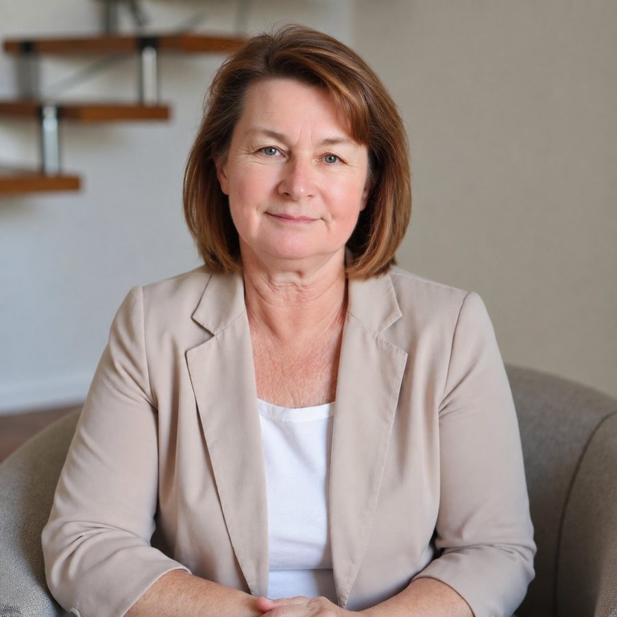

Эльвира Валеева
Для тех, кто снова и снова попадает в одну и ту же ситуацию — в отношениях, деньгах, работе или важном решении — и хочет понять, что за ней стоит.
Вы присылаете фото и вопросы. Я работаю с проводником в гипнозе, вам присутствовать не нужно. Через 3–7 дней — аудиозапись разбора, расшифровка и рекомендации.
30 минут бесплатно: разберём ваш запросСкажу честно, подходит ли вам формат. Платить — только после беседы.
С чем приходят
Так это звучит, когда человек пишет мне первый раз.
Меняю работу, окружение, а наступаю на те же „грабли“
Истории разные, а финал каждый раз один и тот же. Где начинается эта петля — не видно.
Не могу решиться
Переезд, работа, отношения. Вы взвешиваете месяцами и всё равно стоите на месте.
Всё перепробовала, а сил нет
Курсы, книги, специалисты. Снаружи всё правильно, а внутри пусто и тяжело.
Чем отличается
Я не подбадриваю и не пересказываю то, что вы и так знаете. Мы честно, но бережно смотрим, что стоит за вашей ситуацией, — без приговоров и страшных диагнозов.
Сеанс один, всё остаётся у вас в записи. Ни программы, ни подписки, ни занятий каждую неделю.
В завершение я гармонизирую вас, ваше пространство, а при необходимости и саму ситуацию.
Как это проходит
Глубинная диагностика — это один сеанс, на котором мы смотрим вашу ситуацию по фотографии. Наш метод — энергоинформационный гипноз. Я ввожу в гипноз проводника, и в этом состоянии он видит вашу ситуацию по фотографии: не события, а причину, которая держит вашу ситуацию. Я живу в Афинах, проводник — в Риге, мы работаем вдвоём по телефону. Вам в это время ничего делать не нужно.
1
Свою фотографию, ФИО и дату рождения, вопросы, которые хотите разобрать. Всё в Telegram — ни встреч, ни расписания, ни подготовки.
2
И настраиваю его на вас по фотографии. В этом состоянии он видит вашу ситуацию так, как её не видно снаружи.
3
Сначала смотрим все сферы — здоровье, отношения, дело, таланты и предназначение. Потом я задаю ваши вопросы, проводник отвечает, а я уточняю, пока картина не станет ясной.
4
Вас, вашего пространства, а при необходимости — и самой ситуации. Мы не останавливаемся на том, что причина названа.
5
Аудиозапись разбора, расшифровку текстом и рекомендации — что с этим делать дальше. Это и есть энергоинформационный отчёт. Если что-то останется непонятным — объясню, это входит в цену.
О конфиденциальности: фото нужно только для настройки — после сеанса я его удаляю. Ваши данные я не передаю никому и никуда не выкладываю. Записи сеансов я не публикую никогда.
Кто я
Гипнолог, аналитик слепых зон
Я не даю советов и не веду курсы. Мы разбираем вашу ситуацию по всем сферам сразу, а не по одному вопросу.
Если через полгода-год появится новая ситуация — вернёмся.
Обучение: сертификат Международной ассоциации энергоинформационного гипноза, Санкт-Петербург. Сертификат «Нейрографика», базовый уровень — Институт психологии творчества Павла Пискарёва, 2022.
С чем работаю
Чаще всего приходят с этим.
Порядок сеанса
Образец отчёта
Выдержки из настоящего отчёта — публикую только с разрешения клиента и только имя, по его желанию.
С чем пришёл Андрей
Что увидели на сеансе
Что в отчёте по порядку
Объём: у Андрея расшифровка вышла на 15 страниц.
Работа не заменяет медицинскую и психиатрическую помощь: если речь о теле, я прошу показаться врачу.
Цена
20 000 ₽
Одна оплата за весь сеанс. Без продолжений, подписок и доплат за «второй этап».
Что входит — по порядку
Оплата — только после беседы и только если вы решите работать.
Скажу честно, подходит ли вам формат. Платить — только после беседы.
Отзывы
Ко мне приходят по рекомендации, и большинство клиентов не хотят публичности. Публикую только то, на что дали разрешение, — и только имя, по желанию клиента.
Артём
Относился скептически и не думал, что это может как-то помочь. Сказать, что сеанс помог, — это ничего не сказать: сначала даже слов не мог подобрать, чтобы описать ощущения и прозрения, которые получил. Жаль, что не сделал этого раньше.
Дмитрий
Удивило, когда мне озвучили такие нюансы моей ситуации, о которых знаю только я.
Наталья
Спустя две-три недели я начала замечать, что наконец-то поймала гармонию с самой собой. Я снова начала работать, у меня появились новые идеи, я перестала бояться воплощать их в жизнь.
Евгения
С чем пришла: деньги — иду ли я в правильную сторону и где лежат мои финансы; здоровье — на что обратить внимание, что поберечь; отношения — мужу не хватает моего внимания, а как разорваться на всё, не знаю. В остальном чувствую себя на своём месте, только с большим перекосом в работу.
Я не знаю, какие даже слова подобрать. То, что вы делаете, — это уникально, это невозможно объяснить словами. Сейчас у меня настолько всё в гармонии — я к этому шла. А через неделю после нашего разговора я начала ходить на массаж — и мне так полегчало, мне так стало хорошо.
Вопросы и ответы
Если вашего вопроса здесь нет — напишите в Telegram, отвечу.
Фотография нужна как адрес: по ней проводник настраивается на вас.
Наш метод — энергоинформационный гипноз. Я ввожу проводника в гипнотическое состояние, и в нём он видит не события вашей жизни, а причину, которая держит вашу ситуацию. Информация идёт из информационного поля. Работаем вдвоём: я — гипнолог, он — проводник.
Я не стану доказывать, что метод признан наукой. За ним — 5 лет практики и 140+ проведённых сеансов. Посмотрите образец отчёта и отзывы, начните с бесплатной беседы — и решите сами.
Потому что информация считывается по фотографии, а не с ваших слов. Вам не нужно никуда приходить, быть на связи и подстраивать под сеанс свой день.
Вопросы мы формулируем заранее — вместе, на бесплатной беседе, — и я задаю их за вас. Если после отчёта что-то останется непонятным, я объясню. Это входит в цену.
Одна оплата — за весь сеанс, без доплат и «второго этапа». По порядку:
Платить — только после беседы и только если вы решите работать.
В начале сеанса мы всегда смотрим общее состояние человека. Там могут выйти и отклонения по здоровью — я говорю об этом прямо, но это не диагноз и не приговор: если речь о теле, я прошу показаться врачу.
Я не ищу виноватых и не говорю «вы сами это притянули». Сеанс не заканчивается словами «вот ваша проблема»: в конце всегда гармонизация и рекомендации.
Я не обещаю стопроцентной точности — обещать такое было бы нечестно.
Информация идёт из информационного поля, а ясность ответа зависит от вопроса: чем конкретнее и подробнее вы спросите, тем конкретнее будет ответ. Поэтому вопросы мы всегда разбираем и уточняем вместе перед сеансом.
Если в отчёте что-то вам не откликнулось — просто напишите мне, разберём. Это входит в цену.
Приходите с ним. В начале мы в любом случае смотрим общее состояние — здоровье, отношения, дело и деньги, таланты, — потому что причина часто лежит не там, где болит. А дальше отвечаем строго по вашему вопросу.
Это не удорожает сеанс: общий разбор входит в те же 20 000 ₽.
Нужны три вещи: ваша фотография, ФИО и дата рождения, вопросы для разбора. Всё в Telegram.
Фотография подойдёт любая, даже обычное селфи — главное, чтобы было видно ваше лицо. Фото нужно только для настройки — после сеанса я его удаляю.
Ваши данные я не передаю никому и никуда не выкладываю. Записи сеансов не публикую никогда, отзывы — только с разрешения и только имя, по желанию клиента.
Я не врач. Диагнозов не ставлю, лечения не назначаю и медицинскую помощь не заменяю.
На сеансе видно другое: где тело просит внимания и что за состоянием стоит. Если речь о теле, я всегда прошу показаться врачу — и в отчёте пишу об этом прямо.
Если симптомы уже беспокоят, идите к врачу сейчас, не дожидаясь сеанса.
Нет. Ко мне приходили откровенные скептики. Артём написал после сеанса: «Относился скептически и не думал, что это может как-то помочь… Жаль, что не сделал этого раньше». Дмитрия удивило, что ему озвучили нюансы, о которых знал только он.
Вам не нужно ни во что верить, настраиваться и что-либо делать. Вы присылаете фото и вопросы — и получаете отчёт. Дальше судите по тому, что в нём.
Я работаю только по просьбе самого человека и только по его вопросам о себе. Разбор за спиной у мужа, взрослого сына или подруги я не делаю — даже из лучших побуждений. Исключение — дети: ребёнка до 14 лет смотрю по просьбе родителя.
Если вы хотите понять, как вам выстроить отношения с близким человеком, — это ваш вопрос о себе, и с ним приходите.
Отчёт остаётся у вас: аудиозапись можно переслушивать, расшифровку — перечитывать и возвращаться к рекомендациям.
Если что-то в записи непонятно — напишите, объясню. Это входит в цену и не ограничено по количеству вопросов.
Продолжения и «второго этапа» нет: чаще всего хватает одного сеанса. Если через полгода-год появится новая ситуация — возвращайтесь.
Дальше
30 минут бесплатно: разберём ваш запрос. Голосом или перепиской — как вам удобнее.
Для диагностики нужно
Скажу честно, подходит ли вам формат. Сеанс — 20 000 ₽, платить только после беседы.
Эльвира Валеева · гипнолог
Глубинная диагностика — разбор вашей ситуации по фотографии.
Работа не заменяет медицинскую и психиатрическую помощь.